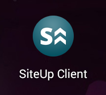
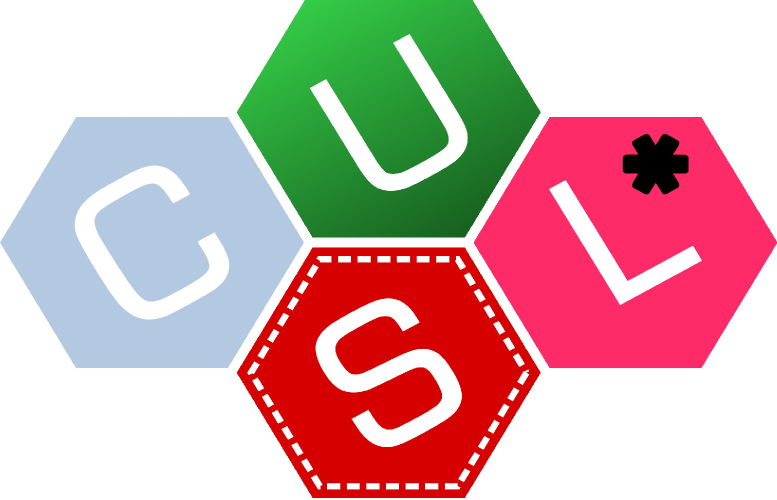

Índice
- Introducción
- Planificación
- Descripción
- Desarrollo
- Conclusiones y difusión
- Demostración
- Ronda de preguntas
Introducción
Introducción
Contexto
Las nuevas tecnologías son parte integral de la sociedad.
Surgen nuevos modelos de negocio
basados al 100% en las TIC.
Queda manifiesta la importancia de
la fiabilidad de los servicios.
Introducción
Motivación personal
- Octubre de 2013, proceso de selección con Google.
- Dirección: info@josetomastocino.com
- La empresa de alojamiento borra accidentalmente los registros DNS.
- Resultado: correos electrónicos perdidos.
- Se podría haber evitado teniendo monitorización sobre las DNS.
Introducción
Objetivos
- Adquisición de base de conocimientos.
- Creación de un módulo para crear varios tipos de chequeos.
- Construcción de plataforma online para la creación y gestión de tales chequeos.
- Desarrollo de un sistema de notificaciones a través de correo y mediante una aplicación Android.
Introducción
Objetivos transversales
- Conocer los entresijos de una aplicación de monitorización.
- Ampliar conocimientos sobre desarrollo web.
- Adquirir experiencia en la programación de apps Android.
- Descubrir nuevas tecnologías.
- Aportar al software libre.
Planificación
Planificación
Desarrollo iterativo
- 1ª iteración: Adquisición de base de conocimientos.
- 2ª iteración: Desarrollo de módulo de chequeo básico.
- 3ª iteración: Desarrollo de la plataforma web.
- 4ª iteración: Integración del motor de tareas asíncronas.
- 5ª iteración: Desarrollo de la aplicación Android.
Descripción
Descripción
Qué es SiteUp
Herramienta de monitorización de servicios de Internet, accesible a través de la web, con notificaciones mediante correo electrónico y una aplicación Android.
Plataforma web
+
Aplicación Android
Plataforma web

Plataforma web
Gestión de chequeos
Un chequeo representa un punto de vigilancia sobre un servicio remoto.
Plataforma web
Gestión de chequeos
"Quiero verificar el tiempo de
respuesta de un servidor"
"Debo comprobar que la web X
responde correctamente"
Plataforma web
Detalles de los chequeos
SiteUp permite crear y gestionar esta clase de chequeos.
Todos
los chequeos cuentan con:
- Título y descripción.
- Periodicidad: máximo 1 chequeo por minuto.
- Sensibilidad: fallos consecutivos para considerar un error.
- Opciones de notificación: e-mail, aplicación Android.
- Activación y desactivación temporal.
Plataforma web
Grupos de chequeos
SiteUp permite agrupar chequeos para facilitar su gestión:
- Título descriptivo.
- Facilidad de creación y borrado de los chequeos agrupados.
- Activación y desactivación en masa.
Plataforma web
Tipos de chequeos
SiteUp cuenta con cuatro tipos de chequeos
Plataforma web
Chequeo tipo Ping
Permiten comprobar que un
servidor remoto está en línea y responde.
- Chequeo mediante paquetes ICMP (ping).
- Opcionalmente se puede definir un tiempo de respuesta máximo.
- Se generan gráficas y estadísticas según tiempo de respuesta.
Plataforma web
Chequeo de puertos
Permiten comprobar que un
puerto asociado a un servicio en
un
servidor remoto es accesible y permite conexiones.
- Se abre una conexión al servidor remoto en el puerto indicado.
- Opcionalmente se puede revisar la respuesta textual del servidor.
Plataforma web
Chequeo de registros DNS
Comprueba que el contenido de un registro DNS
de un dominio sea el adecuado.
- Tipos soportados:
- A: address record
- AAAA: IPv6 address record
- CNAME: canonical name (alias)
- MX: mail exchange
- TXT: text record
Plataforma web
HTTP check
Comprueba que las peticiones HTTP a un
servidor web se responden
adecuadamente.
- Permite revisar el código de estado de las respuestas, por ejemplo:
- 200: OK
- 404: Not found
- 301: Moved permanently
- Opcionalmente, permite también revisar el contenido.
Plataforma web
Generación y procesado de datos
- Periódicamente se registra el estado de cada chequeo.
- Los cambios de estado producen eventos que lanzan notificaciones.
- La información generada es visible en la página de detalle del chequeo.
- Se generan resúmenes para las últimas 24 horas, última semana y último mes.
- También se ofrece la opción de exportar los datos en formato JSON.
Plataforma web
Notificaciones vía e-mail
Aplicación Android

- Aplicación nativa para Android 2.6+
- Se comunica con el servidor de la plataforma web.
- Permite ver el listado de los chequeos del usuario.
- Recibe notificaciones push instantáneas desde la web mediante los servicios de Google Cloud Messaging.
Aplicación Android

Desarrollo
Desarrollo
Principales tecnologías utilizadas
- En front-end:
- HTML5 como lenguaje de marcado, SCSS y Compass para estilos.
- jQuery y D3 para interactividad y gráficas.
- En back-end:
- Python y Django como framework web.
- Celery y RabbitMQ como cola de tareas asíncronas.
- Nginx, Gunicorn y Supervisor como pila de servicios.
- Para la app Android, el SDK oficial y la API de Google Cloud Messaging.
Desarrollo
Arquitectura lógica

Desarrollo
Detalles de implementación: lanzamiento de Ping
Problema: sólo los usuarios con permiso root pueden lanzar paquetes del protocolo ICMP.
Solución: utilizar el comando Ping y procesar su salida.
Este comando tiene unos permisos especiales que le permiten lanzar paquetes ICMP. SiteUp usa el comando internamente y procesa su salida usando expresiones regulares.
Desarrollo
Detalles de implementación: resumen de registros
Problema: el volumen de datos generado crece muy rápido cuando hay bastantes chequeos en el sistema.
Solución: habilitar un sistema de resumen de registros, que procesa los datos por intervalos de tiempo y reduce el espacio que ocupan.
El sistema divide los registros de cierta antigüedad en intervalos de tiempo, genera una media de los datos y descarta el resto, obteniendo una reducción de espacio significativa y manteniendo el grueso de la información.
Conclusiones y difusión
Conclusiones
Objetivos cumplidos
Se completaron todos los objetivos propuestos
- Se creó un conjunto de herramientas de chequeo modularizadas de diversa índole.
- Alrededor de ese módulo se construyó una plataforma web de acceso público para la gestión de chequeos.
- Se estableció un sistema de notificaciones con el que mantener informados a los usuarios mediante correo electrónico y aplicación Android.
Conclusiones
Conclusiones personales
Un proyecto nacido de una necesidad personal
y con aplicación en el mundo real.
Satisfacción de completar todos los objetivos propuestos.
Variado y enriquecedor conjunto de nuevas tecnologías aprendidas.
Interés en ampliaciones y desarrollo futuro.
Conclusiones
Difusión y reconocimiento
Forja:
- Código disponible en GitHub.
- 250 revisiones en 5 meses.
- Aprox. 6000 líneas de código Python (sin contar frameworks ni librerías).
Conclusiones
Difusión y reconocimiento
SiteUp participó en el VIII Concurso Universitario de Software libre, obteniendo el premio al Mejor Proyecto Innovador de Software Libre en la fase local del concurso.

Demostración
¡Gracias por su atención!
Ronda de preguntas